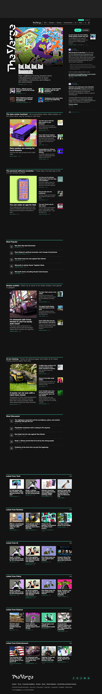

The Verge 的 Design.md 主题展示，围绕编辑/机构、媒体内容、消费品牌、电商零售组织页面。
Tech editorial media. Acid-mint and ultraviolet accents, Manuka display, rave-flyer story tiles.

#3cffd0: #3cffd0#000000: #000000#ffffff: #ffffff#a0a0a0: #a0a0a0#fbbf24: #fbbf24#8a8a8a: #8a8a8a#0a0a0a: #0a0a0a#e0e0e0: #e0e0e0display: WiredDisplaybody: Apercumono: ui-monospacehints: WiredDisplay,Apercu,ui-monospace,Inter,Robotocontrol: 7pxcard: 7pxpreview: 7pxpill: 9999pxsource: design-mdxxs: 90pxxs: 5.63remsm: 34pxmd: 2.13remlg: 18pxxl: 1.13remxxl: 1.8pxxxxl: 1.9pxsection: 0.16pxsection-lg: 0.32pxhero: 1.07pxband: 107pxspace-13: 60pxspace-14: 10pxspace-15: 24pxspace-16: 20pxsource: design-md